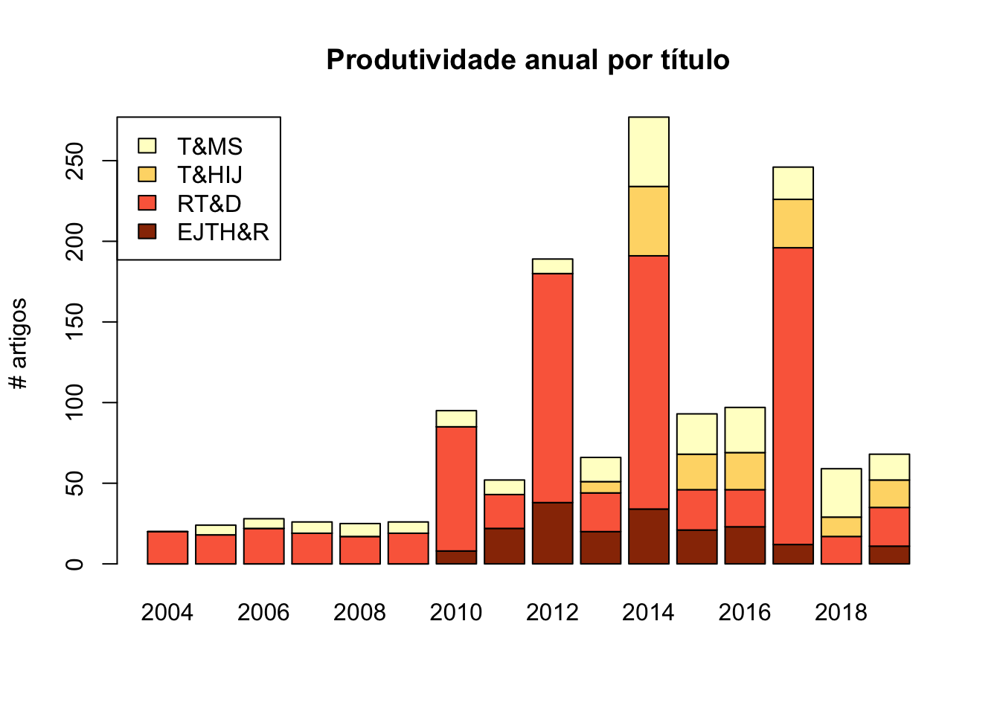
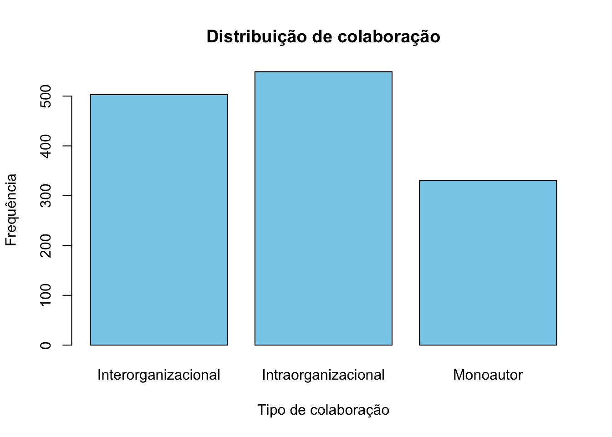
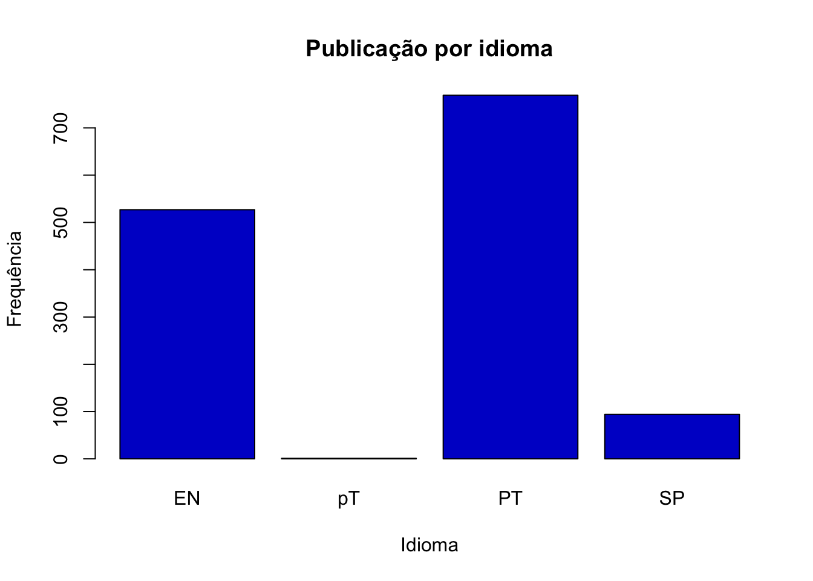
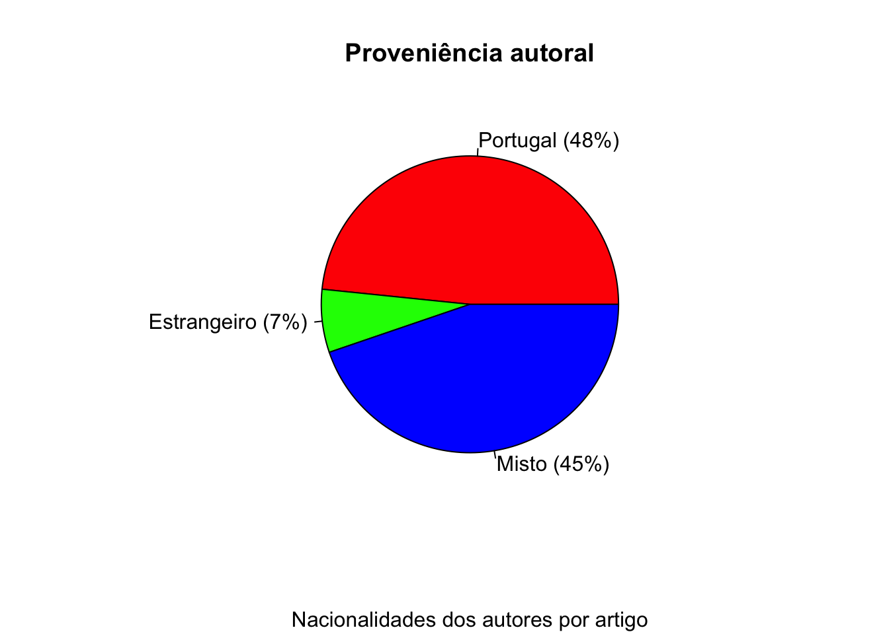

[1] "Artigos_Turismo" "has_annotations"Análise Dados Artigos
Resumo
O presente trabalho analisa os artigos científicos publicados nas revistas académicas portuguesas da área do turismo entre 2004 e 2019. Através de uma abordagem bibliométrica descritiva, examinam-se as caraterísticas de cada título, a sua evolução e o respetivo perfil autoral. Os resultados obtidos indiciam a existência de projetos editoriais relativamente distintos e o predomínio das proximidades linguística e geográfica em termos de representação nacional.
Palavra-chave Turismo, Investigação, Revista científica, Portugal
1 Introdução
Vocacionadas primordialmente para a produção, disseminação e intercâmbio de resultados de investigação teórica e aplicada - convencionalmente sustentadas num rigoroso processo anónimo de aferição prévia da qualidade - as revistas científicas (journals) desempenham um papel crucial no progresso cumulativo da Ciência. Da sua análise é possível conhecer e compreender caraterísticas, extensão (incluindo lacunas) e progressão aos níveis: i) individual de cada revista (meso); ii) da disciplina ou campo de estudos como um todo (meta); ou ainda iii) a uma escala micro, dos autores e respetivas organizações de filiação (Hall, 2005). Neste sentido, a sua evolução reflete o desenvolvimento de toda uma comunidade académica (Strandberg, Nath, Hemmatdar, & Jahwash, 2018).
Concomitantemente com o crescimento praticamente incessante do turismo (e subsequente saliência económica), nas últimas décadas assistiu-se à expansão da formação especializada (vocacional ou de grau superior) nesta área e ao desenvolvimento de um campo de estudos e investigação dedicado (Jogaratnam, Chon, McCleary, Mena, & Yoo, 2005). A par de numerosos eventos e organizações especializados, a proliferação da publicação académica, nomeadamente a periódica, testemunha-o: de apenas cinco títulos em 1980, em 1999 somava já 50 (Weiler, 2001), ascendendo a 240 em 2014 (Hunt, Gao, & Xue, 2014); estimativas mais recentes apontam para cerca de 390 títulos ativos em todo o mundo no domínio conjunto do turismo, hospitalidade e eventos (McKercher, 2020). Uma tal vitalidade - reconhece Butler (2015) - constitui um desafio à capacidade dos investigadores acompanharem a pesquisa mais recente, a que acresce uma crónica subrepresentação daqueles títulos nos serviços de indexação bibliográfica académica (McKercher, 2008), apenas remediada com estudos endógenos parcelares.
Em Portugal, a publicação de revistas académicas sobre turismo iniciou-se em 2004, contando presentemente com quatro títulos. Contudo, passados 16 anos estes periódicos permanecem maioritariamente por analisar quanto às suas caraterísticas, evolução e produtividade - lacuna que o presente estudo visa colmatar.
Neste sentido, o presente trabalho prossegue com um enquadramento à publicação periódica na área do turismo (secção 2), sumariando as principais análises anteriores. A secção seguinte (3) descreve o desenho e a realização do estudo empírico, continuando com a apresentação dos resultados obtidos (secção 4). Por fim, na secção 5 reflete-se sobre aqueles resultados e perspetivam-se as respetivas limitações, antecipando-se igualmente possíveis direções futuras para o desenvolvimento de estudos deste género. # Metodologia # Resultados
1.0.1 Caraterização dos dado analisados
A partir do ficheiro-fonte dados analisaram-se 18 variáveis com a seguinte caraterização:
#ID_Artigo Validade Revista Ano
Length:1391 Mode:logical Length:1391 Length:1391
Class :character TRUE:1391 Class :character Class :character
Mode :character Mode :character Mode :character
Vol Nº Vol+# #Especial
Min. : 1.000 Length:1391 Length:1391 Mode :logical
1st Qu.: 1.000 Class :character Class :character FALSE:778
Median : 3.000 Mode :character Mode :character TRUE :613
Mean : 4.603
3rd Qu.: 7.000
Max. :15.000
NA's :292
pp_I pp_F Título Keywords
Min. : 1.0 Min. : 8.0 Length:1391 Length:1391
1st Qu.: 50.0 1st Qu.: 63.0 Class :character Class :character
Median : 111.0 Median : 126.0 Mode :character Mode :character
Mean : 342.5 Mean : 355.6
3rd Qu.: 363.0 3rd Qu.: 374.0
Max. :2345.0 Max. :2352.0
Idioma pp's #autores Colaboração
Length:1391 Min. : 3.00 Min. : 1.000 Length:1391
Class :character 1st Qu.: 10.00 1st Qu.: 2.000 Class :character
Mode :character Median : 12.00 Median : 2.000 Mode :character
Mean : 14.08 Mean : 2.339
3rd Qu.: 15.00 3rd Qu.: 3.000
Max. :1007.00 Max. :18.000
Âmbito Participação
Length:1391 Length:1391
Class :character Class :character
Mode :character Mode :character

Interorganizacional Intraorganizacional Monoautor
503 549 331 


2 Conclusão
A principal contribuição do presente trabalho decorre da análise conjunta da publicação das revistas científicas periódicas portuguesas sobre turismo, estendendo a pesquisa similar existente (atrás mencionada) além dos habituais títulos internacionais mais influuentes e num contexto não-anglófono. Pese embora a sua reduzida expressão, o aparecimento daquelas revistas representou não só um acréscimo do potencial de publicação Portuguesa na área (até então restringida à publicação noutros domínios disciplinares ou em publicações estrangeiras), mas também um marco no desenvolvimento da investigação e ensino neste subdomínio do conhecimento.
Os resultados agora obtidos permitem tecer comparações quer com as referências aludidas no enquadramento, quer entre os títulos analisados. Por um lado, as prevalências da autoria académica, dos artigos multiautorados e das contribuições isoladas reafirmam os resultados dos estudos internacionais mencionados, ao mesmo tempo que evidenciam a polarização da produção num conjunto restrito de nacionalidades, organizações (académicas) e, em menor grau, dos autores mais prolíficos. As disparidades entre os títulos, por seu turno, manifestam-se a múltiplos níveis: enquanto a RT&D é o título que contabiliza mais artigos publicados, mais organizações representadas, um maior número de autores (nomeadamente, dos filiados em organizações portuguesas) e onde a colaboração interinstitucional (em particular, internacional) é mais expressiva, o EJTH&R é o que publica a maior proporção de artigos monoautorados, de artigos autorados por indivíduos filiados em organizações de outras nacionalidades (i.e., não portuguesas, brasileiras ou espanholas) e onde estão representadas mais nacionalidades, sendo igualmente o único a publicar exclusivamente em inglês. Complementarmente, T&HIJ e na T&MS denotam um maior protagonismo de textos em espanhol, verificando-se um decréscimo global do portugu ês face ao inglês.
Pese embora a maior expressão da autoria filiada em organizações portuguesas no total de artigos ou de autores, não se reconhece aí qualquer hegemonia, atendendo à representação das organizações brasileiras, por exemplo. Não obstante, a concentração da produtividade em apenas três nacionalidades mais representadas - correspondendo a cerca de quatro quintos dos artigos e autores, e mais de metade das organizações - sugere um efeito de proximidade a dois níveis distintos: uma proximidade linguística no que ser refere aos autores ‘brasileiros’ e outra geográfica, relativamente aos ‘espanhóis’. Complementarmente, o perfil colaborativo aponta para uma maior prevalência da colaboração interorganizacional entre ‘brasileiros’, intraorganizacional para ‘espanhóis’ ou monoautorada para os restantes países, sendo os ‘portugueses’ os menos internacionais. O exame de ambas as situações, contudo, reside além do âmbito do presente estudo.
Com base nos resultados apresentados, afigura-se legítimo refletir sobre a viabilidade dos quatro projetos editoriais num contexto académico como o português: a aparente interrupção (ainda que momentânea) da publicação dos dois títulos mais recentes - coincidentemente aqueles sedeados em instituições de ensino politécnico e com uma orientação mais focalizada na hospitalidade - assim o justifica. Entre outras, as possibilidades podem contemplar a reorientação do posicionamento editorial (agregando uma nova disposição disciplinar, temática ou até geográfica), a fusão de títulos ou o estabelecimento de parcerias (nacionais ou internacionais) com instituições que assegurem a sua viabilidade.
Uma pesquisa como a presente não é, naturalmente, isenta de limitações: circunscrevendo-se às publicações indicadas, os seus resultados não deverão ser tomados como representativos da produtividade quer de indivíduos, quer de instituições, nomeadamente aqueles portugueses. Desde logo porque a atividade de investigação e publicação sobre turismo não se limita ao país, nem sequer à publicação periódica ou aquela explicitamente dedicada ao turismo. Por outro lado, porque englobam também a contribuição de autores não-nacionais radicados ou que temporariamente desenvolveram a sua atividade (e.g., estudos pós-graduados) no país. Quanto ao pendor marcadamente descritivo e não-teorizante do estudo, ele deriva do seu propósito fundacional, centrado no levantamento e análise das características globais da publicação considerada, a ser colmatado em estudos subsequentes.
Procurando ser um ponto de partida, antevê- se a possibilidade de complementação do presente trabalho com estudos comparativos das realidades espanhola e brasileira, na lógica de proximidade aludida anteriormente. Por outro lado, o seu aprofundamento poderá passar pelo exame do seu impacto (ex. citações), dos temas e caraterísticas bibliométricas (ex. palavras-chave), metodologias ou estruturas sociais inerentes. Ainda assim, um retrato mais completo da investigação portuguesa sobre turismo necessitará de examinar não só outras modalidades da publicação científica na área (publicação de livros; autoria em títulos estrangeiros ou não específicos sobre turismo; editoração; etc.) como outras vertentes de produção científica (graus e teses académicos; unidades de investigação; projetos; consultadoria; financiamento científico; eventos académicos; etc.).
Agradecimentos
Agradece-se à Dr.ª Ilda Lopes (Escola Superior de Turismo e Tecnologia do Mar, Instituto Politécnico de Leiria) todo o apoio prestado na obtenção da informação bibliográfica de artigos do EJTH&R.
Referências
Ballantyne, R., Packer, J., & Axelsen, M. (2009). Trends in tourism research. Annals of Tourism Research, 36(1), 149-152.
Benckendorff, P. (2009). Themes and Trends in Australian and New Zealand Tourism Research: A Social Network Analysis of Citations in Two Leading Journals (1994-2007). Journal of Hospitality and Tourism Management, 16(1), 1-15.